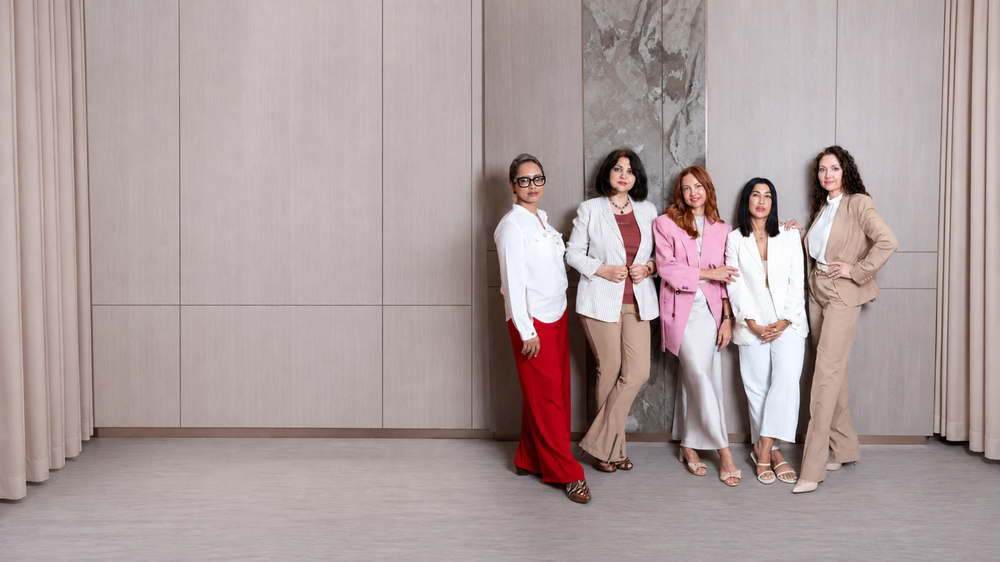
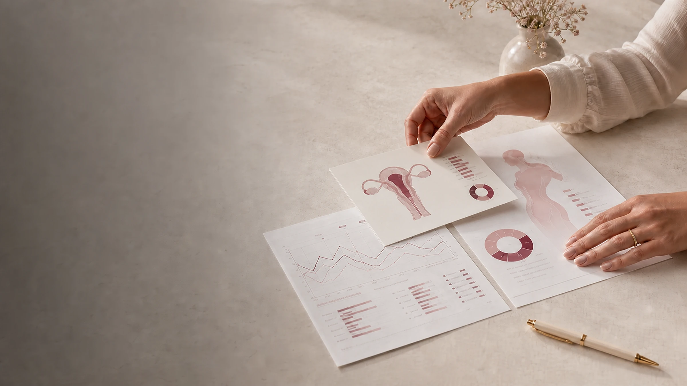
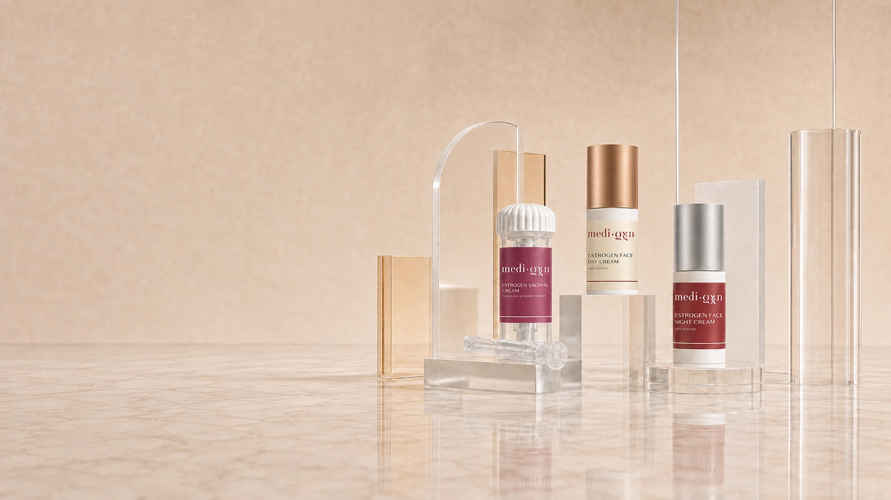
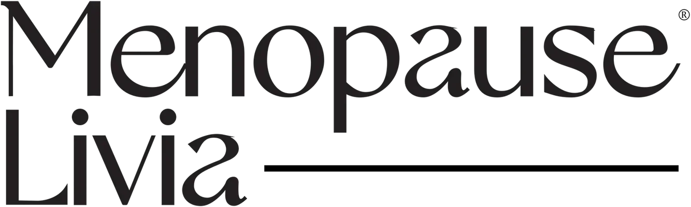
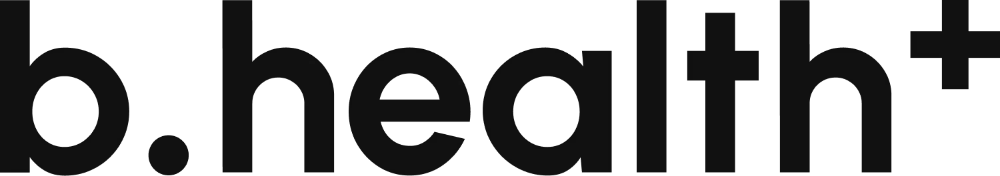
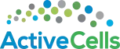

Your hormones.
Your health.
Your best life.
Personalised hormones, menopause care and longevity medicine designed around you — so you can feel like yourself again.
Private. Personal. Powerful.

Personalised Solutions,
Precision Medicine,
Healthy Ageing
Evidence-based medicine meets personalised care — from hormone optimisation and functional medicine to peptides and longevity medicine.
Start With a Conversation, Leave With Clarity
Meet Irina Bond, the founder of Medi-Gyn and Hormone Health Educator. During your complimentary discovery call, she will help you understand your concerns, answer your questions, and help you explore the next step with clarity and confidence.

01
Hormone Therapy BHRT — Menopause & Andropause
Energy, mood, cycles, libido
01
Hormone Therapy BHRT — Menopause & Andropause
For those whose energy, mood, cycles or libido no longer feel like their own.

02
Functional Medicine
Root causes, found and treated
02
Functional Medicine
A deeper investigation into metabolism, digestion, thyroid health and inflammation.

03
Peptide Therapy
Recovery, resilience, repair
03
Peptide Therapy
Medically supervised peptide protocols for recovery, resilience and repair.
04
Healthy Aging
Strength, energy, longevity
04
Healthy Aging
Longevity medicine for the decades ahead — strength, energy, skin and bone, followed over time.
Meet The Experts Behind Your Journey
Behind every personalised journey is a team chosen not only for their expertise, but for their dedication to listening, understanding, and delivering the highest standard of care. Meet the professionals committed to helping you achieve lasting zest for life, vitality and health-span.

Personalised Health
Solutions.
Tailored to You
Explore our carefully selected hormone and peptide therapies, supplements and biohacking solutions designed to support your body — not overwhelm it.
Educational Events Beyond Borders.
From international educational events to global collaborations and media recognition, Medi-Gyn is helping reshape the future of hormone health — one conversation, one city, and one person at a time.
Join menoSTART Featured in
Featured in
Real Patients, Real Stories, Real Impact
“This literally elevated my everyday life to another level. It was transformational.”
“I got a golden medal in world championship in AD with my team. All members of the team were 25 years old and I’m 47.”
“I’ve never felt so safe and understood as a woman seeking medical care.”
“The menopause really hit me fast and furious.”
“Many women struggle with their hormones and well-being. I hope you open more branches in Saudi Arabia… we need you here.”
“I just received my test results from my blood draw this morning. They confirm how I feel – Great!”
“If you are hesitant, just do it.”
“I am a new me, the youngest physical and mental version of me!”
“I am so thrilled to start with you and I already feel at peace of mind that someone can help in a professional manner.”


